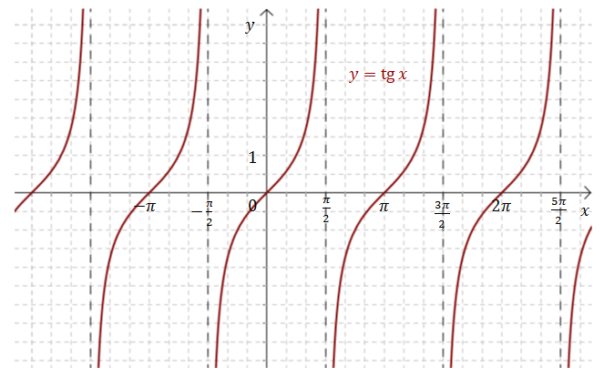
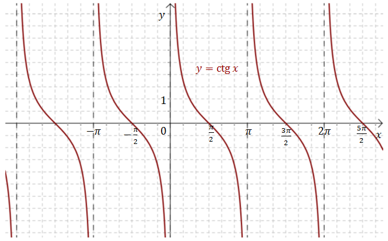
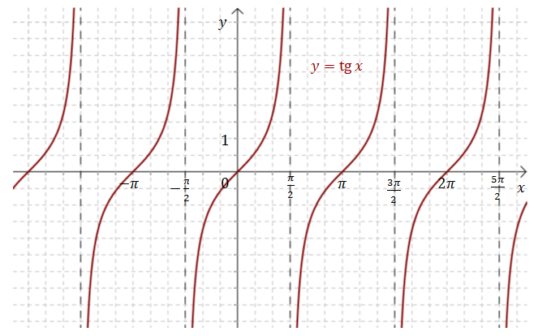
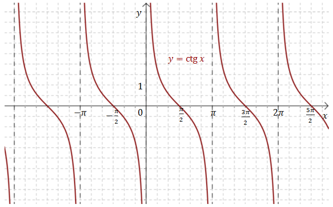
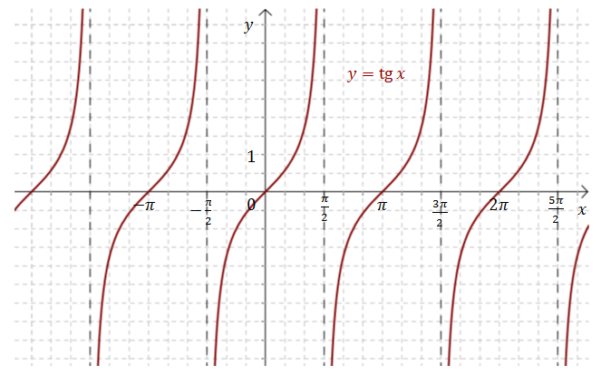
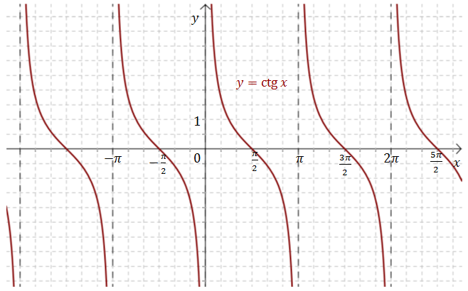

Wykresy funkcji trygonometrycznych - zestawienie
Wykres funkcji sinus wygląda tak:  Wykres
funkcji cosinus wygląda tak:
Wykres
funkcji cosinus wygląda tak:  Wykres funkcji tangens wygląda tak:  Wykres
funkcji cotangens wygląda tak:  Na powyższych rysunkach pokazałem jak najlepiej rysować
wykresy funkcji trygonometrycznych na kratkowanym papierze.
Wykres funkcji tangens wygląda tak:  Wykres
funkcji cotangens wygląda tak:  Na powyższych rysunkach pokazałem jak najlepiej rysować
wykresy funkcji trygonometrycznych na kratkowanym papierze.
Z takich dokładnych rysunków można np.:
Wykres
funkcji cosinus wygląda tak: Wykres funkcji tangens wygląda tak:  Wykres
funkcji cotangens wygląda tak:  Na powyższych rysunkach pokazałem jak najlepiej rysować
wykresy funkcji trygonometrycznych na kratkowanym papierze.Z takich dokładnych rysunków można np.:
- odczytać wartości funkcji trygonometrycznych dla konkretnych kątów,
- wyprowadzać wzory redukcyjne,
- rozwiązywać równania i nierówności trygonometryczne.